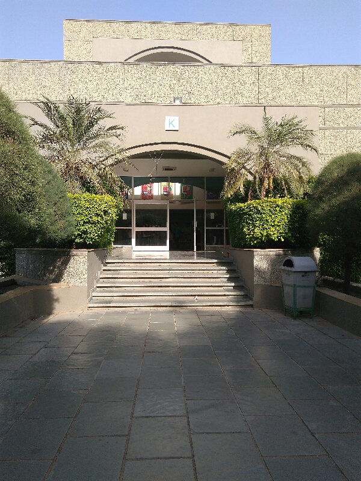

(1)Primary use:
-Dining: Serves meals like breakfast, lunch, and snacks, along with various beverages and fresh juices, catering to the daily food needs of the university community.
-Social Hub: Acts as a favorite hangout zone for students to meet, socialize, and discuss academics or campus life.
-Event Support: Provides catering services for various events organized across the campus.
(2)Food Variety:
Offers a wide selection, including Indian (Gujarati, South Indian), Chinese, Italian (pizzas, burgers), and other snacks, often adhering to a "no junk" policy with healthy options.
(3)Location:
Situated in the K block, making it easily accessible.
(4)Healthy Options:
Focuses on providing nutritious meals, with bans on aerated drinks in some areas.
"K Block Canteen" at Nirma University is a central facility for students, staff, and faculty, offering breakfast, lunch, tea, snacks, and beverages, serving as a popular hangout spot for socializing and discussions, with additional food courts near the Law and Science institutes and hostel mess facilities for residential students.